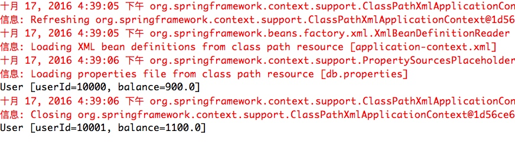
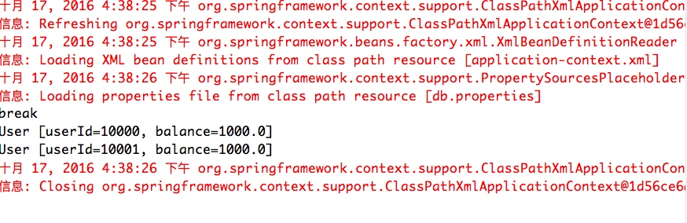
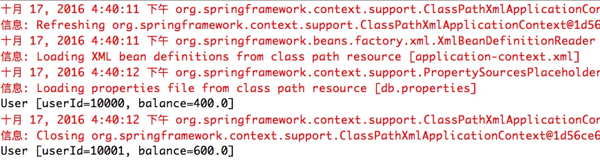
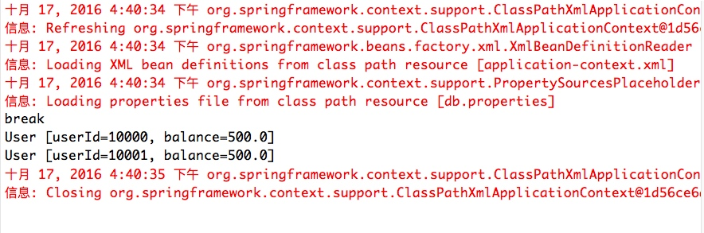

根据本单介绍的Spring JDBC，事务管理，MyBatis等内容，分别使用Spring JDBC及MyBatis提供一个转帐服务（保证事务），提供一个transferMoney接口：
transferMoney(Long srcUserId, Long targetUserId, double count)；// srcUserId及targetUserId为转帐用户标识
相关表结构
| 列名 | 类型 | 备注 |
|---|---|---|
| userId | Long | 唯一用户标识 |
| balance | double | 账户余额 |
程序架构

说明
- UserDao 为统一的User数据库访问接口
- UserService 为外部服务提供直接调用的接口
实现说明
application-config配置，相关配置均有注释说明。其中事务的处理可以采用注解或AOP的XML配置方式，下列代码均有体现。
<?xml version="1.0" encoding="UTF-8"?> <beans xmlns="http://www.springframework.org/schema/beans" xmlns:xsi="http://www.w3.org/2001/XMLSchema-instance" xmlns:aop="http://www.springframework.org/schema/aop" xmlns:context="http://www.springframework.org/schema/context" xmlns:tx="http://www.springframework.org/schema/tx" xmlns:mybatis="http://mybatis.org/schema/mybatis-spring" xsi:schemaLocation=" http://www.springframework.org/schema/beans http://www.springframework.org/schema/beans/spring-beans.xsd http://www.springframework.org/schema/aop http://www.springframework.org/schema/aop/spring-aop-2.0.xsd http://www.springframework.org/schema/tx http://www.springframework.org/schema/tx/spring-tx.xsd http://mybatis.org/schema/mybatis-spring http://mybatis.org/schema/mybatis-spring.xsd http://www.springframework.org/schema/context http://www.springframework.org/schema/context/spring-context.xsd"> <!-- 数据库连接配置文件导入 --> <context:property-placeholder location="db.properties" /> <!-- 扫描注解 --> <context:component-scan base-package="site.zhanjingbo" /> <!-- 使用注解声明事务 --> <tx:annotation-driven transaction-manager="txManager" /> <!-- MyBatis的自动扫描 --> <mybatis:scan base-package="site.zhanjingbo" /> <!-- 数据源配置 --> <bean id="dataSource" class="org.apache.commons.dbcp.BasicDataSource" destroy-method="close"> <property name="driverClassName" value="${jdbc.driverClassName}" /> <property name="url" value="${jdbc.url}" /> <property name="username" value="${jdbc.username}" /> <property name="password" value="${jdbc.password}" /> </bean> <!-- 事务管理器 --> <bean id="txManager" class="org.springframework.jdbc.datasource.DataSourceTransactionManager"> <property name="dataSource" ref="dataSource" /> </bean> <!-- 使用AOP-XML声明事务 --> <!-- <tx:advice id="txAdvice" transaction-manager="txManager"> <tx:attributes> <tx:method name="transfer*" /> </tx:attributes> </tx:advice> <aop:config> <aop:pointcut id="daoOperation" expression="execution(* site.zhanjingbo.service.*.*(..))" /> <aop:advisor advice-ref="txAdvice" pointcut-ref="daoOperation" /> </aop:config> --> <!-- 配置myBatis的sqlSessionFactory --> <bean id="sqlSessionFactory" class="org.mybatis.spring.SqlSessionFactoryBean"> <property name="dataSource" ref="dataSource" /> <!-- 自动扫描mappers.xml文件 --> <property name="mapperLocations" value="classpath:site/zhanjingbo/dao/myBatiesImpl/*.xml"></property> <!-- myBatis配置文件 --> <property name="configLocation" value="classpath:mybatis-config.xml"></property> </bean> </beans>UserDao的接口声明
public interface UserDao { public void reset(); public List<User> getUserList(); public void updateMoney(Long userId, double count); }UserDao的JDBC实现，其中JdbcTemplete由Spring进行装载。
@Component("UserJDBCDao") public class UserDaoJDBCImpl implements UserDao { private JdbcTemplate jdbcTemplate; @Autowired public void setDataSource(DataSource dataSource) { this.jdbcTemplate = new JdbcTemplate(dataSource); } public void reset() { this.jdbcTemplate.execute("update UserBalance set balance=1000"); } public List<User> getUserList() { return this.jdbcTemplate.query("select * from UserBalance", new RowMapper<User>() { public User mapRow(ResultSet rs, int rowNum) throws SQLException { User user = new User(); user.setUserId(rs.getLong("userId")); user.setBalance(rs.getDouble("balance")); return user; } }); } public void updateMoney(Long userId, double count) { this.jdbcTemplate.update("update UserBalance set balance=balance+? where userId=?", count, userId); } }UserDao的MyBatis实现，采用Mapper.xml的方式进行声明实现
<?xml version="1.0" encoding="UTF-8" ?> <!DOCTYPE mapper PUBLIC "-//mybatis.org//DTD Mapper 3.0//EN" "http://mybatis.org/dtd/mybatis-3-mapper.dtd"> <mapper namespace="site.zhanjingbo.dao.UserDao"> <resultMap type="User" id="UserResult"> <result property="userId" column="userId" /> <result property="balance" column="balance" /> </resultMap> <update id="reset"> update UserBalance set balance=500 </update> <select id="getUserList" resultMap="UserResult"> select * from userBalance </select> <update id="updateMoney"> update UserBalance set balance=balance+#{param2} where userId=#{param1} </update> </mapper>UserService的实现，其中主要为transferMoney方法的实现。由于该方法的业务逻辑，该方法应该确保事务性。采用注解的方式声明事务，则在该方法前添加
@Transactional注解。采用配置文件方式对事务进行声明参考第1小节中的配置文件。@Transactional(propagation = Propagation.REQUIRED) public void transferMoney(Long srcUserId, Long targetUserId, double count) { userDao.updateMoney(srcUserId, 0 - count); userDao.updateMoney(targetUserId, count); }在UserService的实现过程中，我们需要调用UserDao的具体实例，在本次作业过程中我们采用了两种方法来实现UserDao。在测试不同的实现方式时只需要修改注入的UserDao的具体实例就可完成。为了明显区分两种实例的实现，我们在reset的方法中做了区别。其中JDBC实现方式Reset之后balance的值为1000，MyBatis实现方式reset之后的balance值为500。
Application调用代码
public static void main(String[] args) { //加载Spring ApplicationContext applicationContext = new ClassPathXmlApplicationContext("application-context.xml"); //获取UserService实例 UserService userService = applicationContext.getBean(UserService.class); userService.reset(); try { userService.transferMoney(new Long(10000), new Long(10001), 100); } catch (Exception e) { System.out.println(e.getMessage()); } List<User> userList = userService.getUserList(); for (User user : userList) { System.out.println(user); } ((ConfigurableApplicationContext) applicationContext).close(); }
运行结果
JDBC运行结果
正常执行
执行中异常，打印异常信息，数据回滚

MyBatis运行结果
正常执行
执行中异常，打印异常信息，数据回滚
